Appendices#
附錄四部分（依你指示改版：inverse 圖已移除；cos vs 高斯的比較放進 B.1，
註明 cos 版源自 Hakim & Masanam 的做法、結論是無明顯差異）：
A. 方法驗證 —— 漂移去除的精確性（單元測試）、垂直加熱剖面、Pangu 積分 TCWV vs
FCNv2 原生 TCWV 通道一致性（RMSE ~3.6 kg/m²）。
⚠ 原 Fig. A1（aux/verification 的 forcing ellipse）已依你指示移除：那個水平加熱範圍
只被 aux 的驗證流程用過、從未用於任何 output run（且疑似長不出渦旋，待確認），
用它說明 output run 的水平加熱會誤導。實際使用的加熱一律以各 run 資料夾內的
heating_dist_check.png 與正文 Fig. 2 為準。
B. 敏感性圖庫 —— B.1 水平包絡 cos vs 高斯；B.2 振幅掃描（⚠ 舊圖已撤換：原
`figs/sweep/pangu/timeseries_amps.png` 出自 sweep_fcnv2_fast.py，資料夾名取自
--model 參數（=pangu），但圖題是腳本裡寫死的 "fcnv2 paperDJF" 字串——不論真跑
哪個模型都印這行；且設定為 paperDJF 冬季背景 + 舊 cos 加熱 + 7 天脈衝 +
振幅 3/5/7，與主線 JAS+高斯+持續+2.5 全不匹配，撐不起 §3.3 的振幅論述。
已補跑正確設定的掃描：pangu24+JAS+gauss+持續，振幅 0.5/1/2.5/5/10（2.5 重用
主線 run），新圖 pic/figB2_amp_sweep.png）；B.3 DJF 季節對照面板；
B.4 垂直分布四組疊圖 + 500 hPa 高度場對照（z'₅₀₀ 服從第三個泛函：柱積分
∫Q dp——uniform 1.00 > Deep 0.64 > Shallow 0.45 ≫ Strat 0.00，解釋了為何
三者相似、唯 Stratiform 不同）；B.5 EX/BL 邊界通道檢驗（你要求補回的
day12 圖 + 垂直模態投影公式 ∫−(∂Q/∂z)Ψ₀dz ≈ Q_B，放附錄因為 §3.4 已證明
柱投影不是控制低層 strip 的泛函，但它是對學到的算子很好的物理檢驗）。
C. 次要觀測事件 —— 2023 年 8–9 月 Saola/Haikui/Kirogi(+Yun-yeung)。
D. 24h vs 6h 完整面板。
Appendix A: Method verification#
The perturbation framework rests on the exactness of the drift removal and on the physical fidelity of the forcing construction; both are verified independently of the scientific experiments.
Recurrence and locking. The re-centering recurrence and the channel-locking
operator \(\mathcal{L}\) are verified exactly against hand-computed sequences
on a mock operator and miniature grid (unit tests in
aux/tests/test_driver_math.py): the implementation reproduces
\(u'_n = M(u_0+u'_{n-1}+f_n) - M(u_0)\) and the zeroing semantics of Steps 2
and 4 to machine precision.
Forcing geometry. The horizontal envelope actually applied in every
production run is documented, per run, by the heating_dist_check.png
generated in each run directory, and for the headline configuration in
Fig. 2 of the main text. The four vertical profiles available to the
sensitivity experiments of Section 3.3 are shown in Fig. A1.
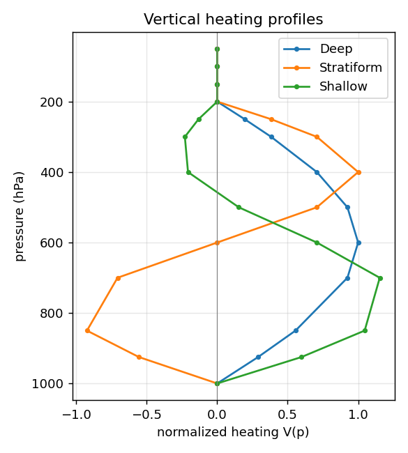
Fig. A1: Vertical heating profiles (Deep, stratiform, shallow, uniform).
Cross-model moisture consistency. Pangu’s diagnosed \(\mathrm{TCWV}=g^{-1}\!\int q\,dp\) agrees with FCNv2’s native TCWV channel on identical states to RMSE \(\approx 3.6\ \mathrm{kg} \cdot \mathrm{m^{-2}}\) (Fig. A2), validating cross-model comparison of moisture responses.
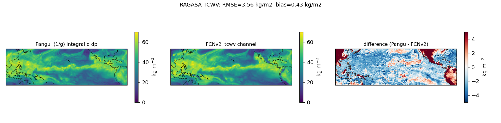
Fig. A2: Integrated q (Pangu) versus native TCWV channel (FCNv2).
Background as-run. The full JAS background state of the headline run is documented in Fig. A3; the heating actually applied is Fig. 2 of the main text.
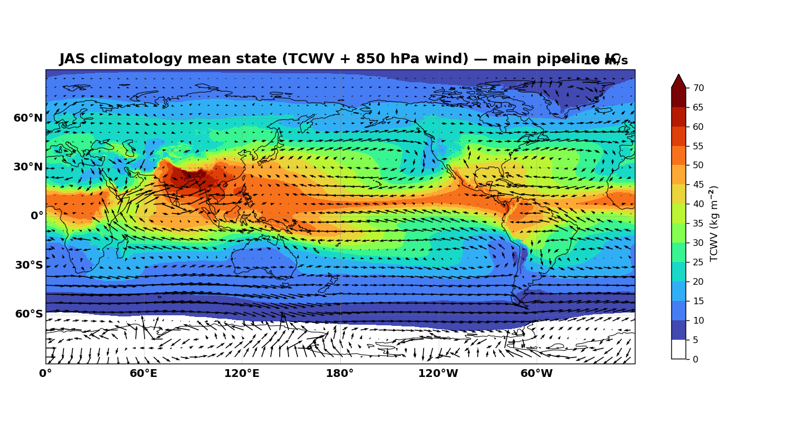
Fig. A3: JAS 1979–2019 climatological background (vorticity and TCWV).
Appendix B: Sensitivity gallery#
B.1 Horizontal envelope: Gaussian versus cosine lobes#
Two horizontal envelopes were tested for the heating of Section 2.4: the separable Gaussian used throughout the paper, and an alternative built from zonal lobes \(\cos\!\left(8(\phi-10^\circ)\right)\) under a Gaspari–Cohn zonal envelope, adapted from the forcing construction of Hakim and Masanam (2024). Their footprints are compared in Figs. B1a–b, and the resulting \(\zeta'_{850}\) evolutions in Figs. B1c–d: the breakdown proceeds in the same way in both — same poleward-flank band, same roll-up into a chain of discrete vortices with similar spacing and latitude — so the choice of envelope does not control the character of the instability. The amplitudes do differ: the all-positive Gaussian delivers more net column heating than the sign-alternating cosine lobes at equal peak rate, and its peak vorticity response is correspondingly larger (roughly a factor of two). Since the structure is envelope-independent and the Gaussian is the smoother, simpler prescription, it is used for the headline experiments.
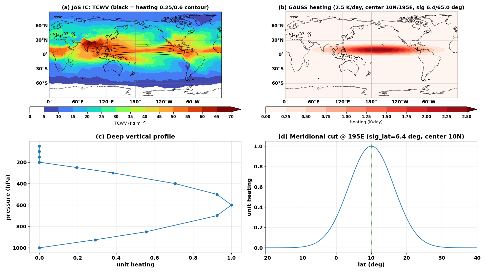
Fig. B1a: Gaussian envelope.
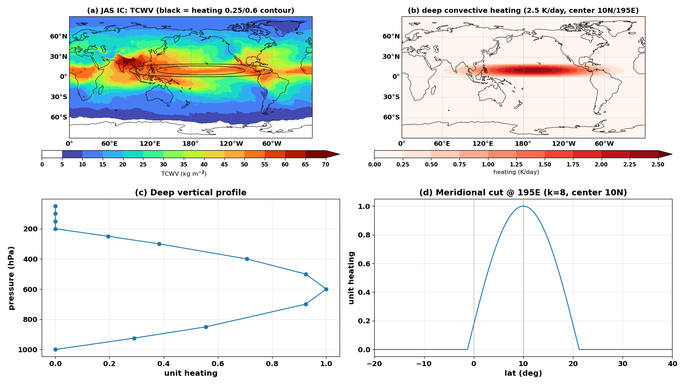
Fig. B1b: Cosine-lobe envelope (after Hakim and Masanam 2024).
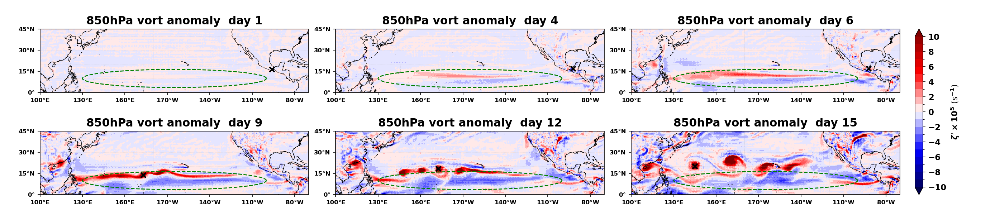
Fig. B1c: \(\zeta'_{850}\) evolution, Gaussian envelope (= Fig. 3).
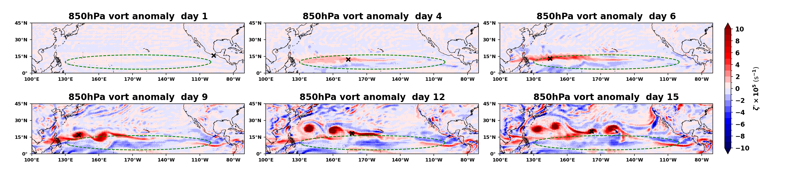
Fig. B1d: \(\zeta'_{850}\) evolution, cosine-lobe envelope.
B.2 Amplitude#
Peak-response time series across the amplitude sweep — the headline configuration (Pangu 24-h operator, JAS background, Gaussian Deep heating, sustained) rerun at \(0.5\), \(1\), \(5\), and \(10\ \mathrm{K} \cdot \mathrm{day^{-1}}\) alongside the \(2.5\ \mathrm{K} \cdot \mathrm{day^{-1}}\) headline run — are shown in Fig. B2. The two fields diverge along the sweep. The column moistening (panel b) increases monotonically with amplitude, peak \(\mathrm{TCWV}'\) rising from \(34.6\ \mathrm{mm}\) at \(0.5\ \mathrm{K} \cdot \mathrm{day^{-1}}\) to \(61.2\ \mathrm{mm}\) at \(10\ \mathrm{K} \cdot \mathrm{day^{-1}}\) — the quasi-passive thermodynamic response. The vortex response (panel a) is non-monotonic: peak \(\zeta'_{850}\) is \(64.0\) and \(63.3 \times 10^{-5}\ \mathrm{s^{-1}}\) at \(0.5\) and \(1\ \mathrm{K} \cdot \mathrm{day^{-1}}\), maximizes at \(89.4\) at the \(2.5\ \mathrm{K} \cdot \mathrm{day^{-1}}\) headline value, then declines to \(68.1\) at \(5\) and \(42.3\) at \(10\ \mathrm{K} \cdot \mathrm{day^{-1}}\), the peak arriving progressively earlier (nominal day 19 → 15 → 12 → 12 → 9). The headline amplitude therefore sits near the optimum for the organized breakdown: below it the strip is under-forced and slow to roll up; well above it the response goes strongly nonlinear from the outset, spreads well beyond the forced strip into the midlatitudes, and the clean four-vortex chain never consolidates.
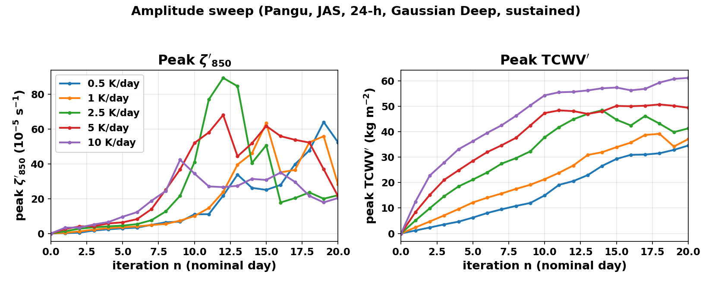
Fig. B2: Amplitude sweep in the headline configuration (five amplitudes \(0.5\)–\(10\ \mathrm{K} \cdot \mathrm{day^{-1}}\)). (a) Peak \(\zeta'_{850}\) versus iteration — non-monotonic, maximized at the \(2.5\ \mathrm{K} \cdot \mathrm{day^{-1}}\) headline value. (b) Peak \(\mathrm{TCWV}'\) versus iteration — monotonically increasing with amplitude.
B.3 Seasonal control#
Snapshot panels of the DJF-background control of Section 3.3, identical Gaussian Deep \(2.5 \mathrm{K} \cdot \mathrm{day^{-1}}\) forcing.
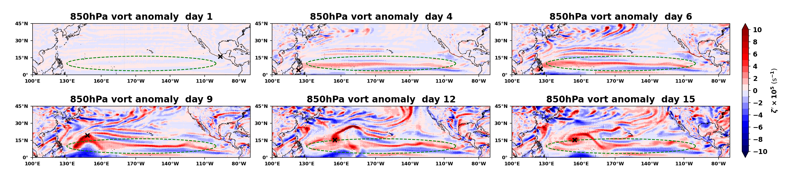
Fig. B3: \(\zeta'_{850}\) evolution, DJF background.
B.4 Vertical-profile sensitivity#
Peak-response time series for the four vertical heating profiles of
Section 3.3 (identical horizontal envelope and amplitude; runs
outputs/JAS/pangu24_{Deep,Shallow,uniform,Stratiform}_2.5Kday_gauss).
The curves display the two pathways analyzed in Section 3.4: uniform grows
earliest (surface-sheet pathway) but saturates lowest in vorticity while
leading in moisture throughout; Deep and Shallow amplify later and higher
(interior PV-source pathway); Stratiform never grows in either field.
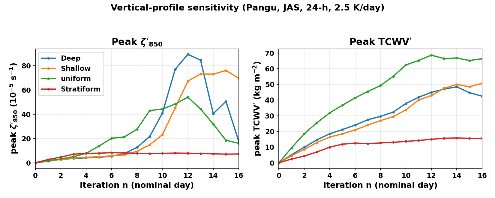
Fig. B4: Vertical-profile sensitivity. (a) Peak \(\zeta'_{850}\) versus iteration. (b) Peak \(\mathrm{TCWV}'\) versus iteration.
The same four runs viewed at 500 hPa (Fig. B5) complete the functional accounting of Section 3.4. The mid-tropospheric height response is not the strip but the far-field stationary-wave response to the tropical heat source, and its amplitude follows yet a third functional of the profile: the net column heating \(\int Q\,dp\), which is largest for uniform (\(1.00\)), then Deep (\(2/\pi \approx 0.64\)), then Shallow (\(\approx 0.45\)), and vanishes identically for Stratiform, whose upper-level heating and low-level cooling cancel in the column integral. Accordingly, Deep, Shallow, and uniform produce wave trains of nearly the same geometry — the pattern is set by the source location and the frozen background, which are common to all four runs, so once the response is excited it converges to the background’s preferred far-field structure and the profiles differ only in amplitude — while Stratiform, with zero net column heating and no growing strip, leaves the 500-hPa field nearly unperturbed. The three response fields thus read three different moments of the same \(Q(p)\): \(\zeta'_{850}\) the low-level source \(S\), \(\mathrm{TCWV}'\) the boundary-layer mean \(\langle Q\rangle_{1000-850}\), and \(z'_{500}\) the column integral — which is also why Section 3.4 warns that the 500-hPa field, where uniform is strongest, is the wrong place to look for the strip-building pathway.
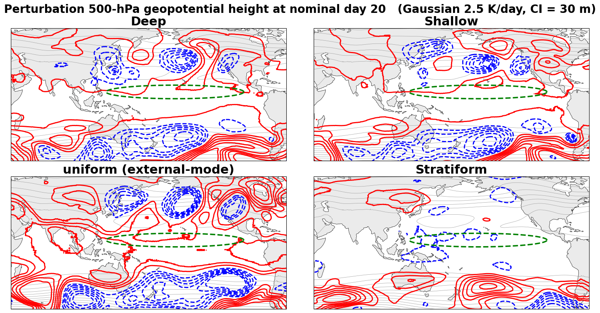
Fig. B5: Perturbation 500-hPa geopotential height at nominal day 20 for the four vertical profiles (same runs as Fig. B4; contour interval 30 m, red positive, blue dashed negative; green dashed ellipse marks the heating footprint). Deep, Shallow, and uniform excite closely similar far-field wave trains, strongest for uniform; Stratiform, whose net column heating integrates to zero, leaves the field nearly flat.
B.5 Boundary-pathway check: external-mode versus boundary-layer heating#
A classical vertical-mode argument holds that the projection of a heating profile onto the external (barotropic) mode, \(\int -(\partial Q/\partial z)\,\Psi_0\,dz\) with the external-mode structure function \(\Psi_0(z)\) nearly constant in the vertical, collapses by parts to the boundary values of \(Q\) — essentially \(Q_B\) at the surface. Two heatings with equal surface amplitude should therefore produce the same external-mode (mid-tropospheric height) response regardless of how much total heat they deposit in the column. The pair of experiments in Fig. B6 tests exactly this: external-mode heating (EX, all levels 1000–50 hPa) versus boundary-layer heating (BL, 1000–700 hPa only) at equal amplitude — the EX column receives several times the total heating of BL — in a Hakim–Masanam-style configuration (steady heating in an elliptical footprint centered at 0°N, 120°E, at \(0.1\) and \(0.5\ \mathrm{K} \cdot \mathrm{day^{-1}}\); note this auxiliary configuration differs from the headline forcing of Fig. 2). At both amplitudes the 500-hPa height responses of EX and BL are nearly indistinguishable, as the projection argument demands: a nontrivial check that the learned operator respects the modal structure of the response to heating. In the language of Section 3.4 the pair is equally clean: both profiles have zero interior gradient in the strip-building layer and equal \(Q_B\), hence equal low-level PV source \(S\) — the pure boundary pathway in isolation. The column projection validated here is, however, not the functional that controls the low-level strip (Section 3.4 shows the interior gradient dominates there), which is why this check lives in the appendix rather than the main text.
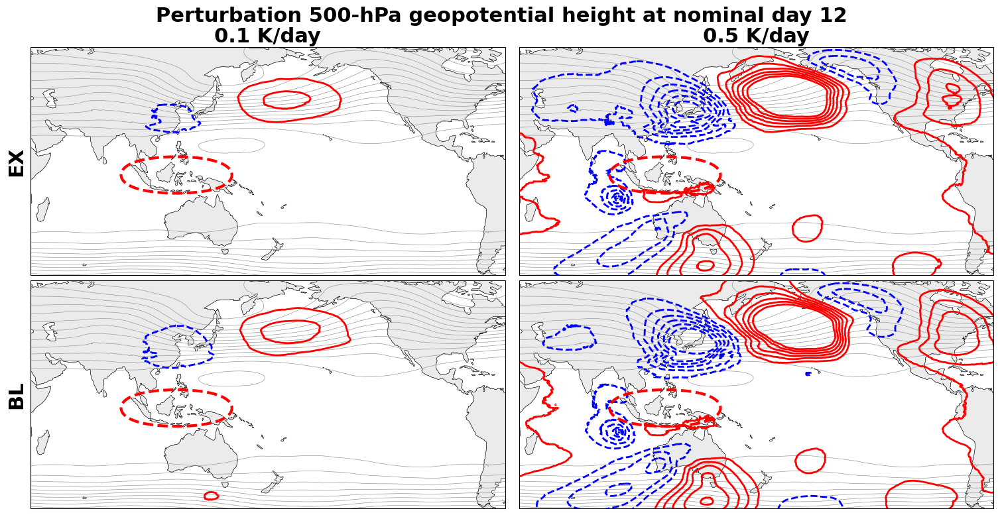
Fig. B6: Perturbation 500-hPa geopotential height at nominal day 12, external-mode heating (EX, top) versus boundary-layer heating (BL, bottom), at \(0.1\ \mathrm{K} \cdot \mathrm{day^{-1}}\) (left) and \(0.5\ \mathrm{K} \cdot \mathrm{day^{-1}}\) (right); red dashed ellipse marks the heating footprint. Each EX panel is nearly identical to the BL panel below it, as the external-mode projection argument predicts.
Appendix C: The August–September 2023 event#
A second observed monsoon-trough discretization, 30 August – 6 September 2023, produced Saola, Haikui, and Kirogi, with Yun-yeung forming to the east (Fig. C1). The event is meridionally less aligned than the November 2024 case but exhibits the same strip-to-vortices morphology.
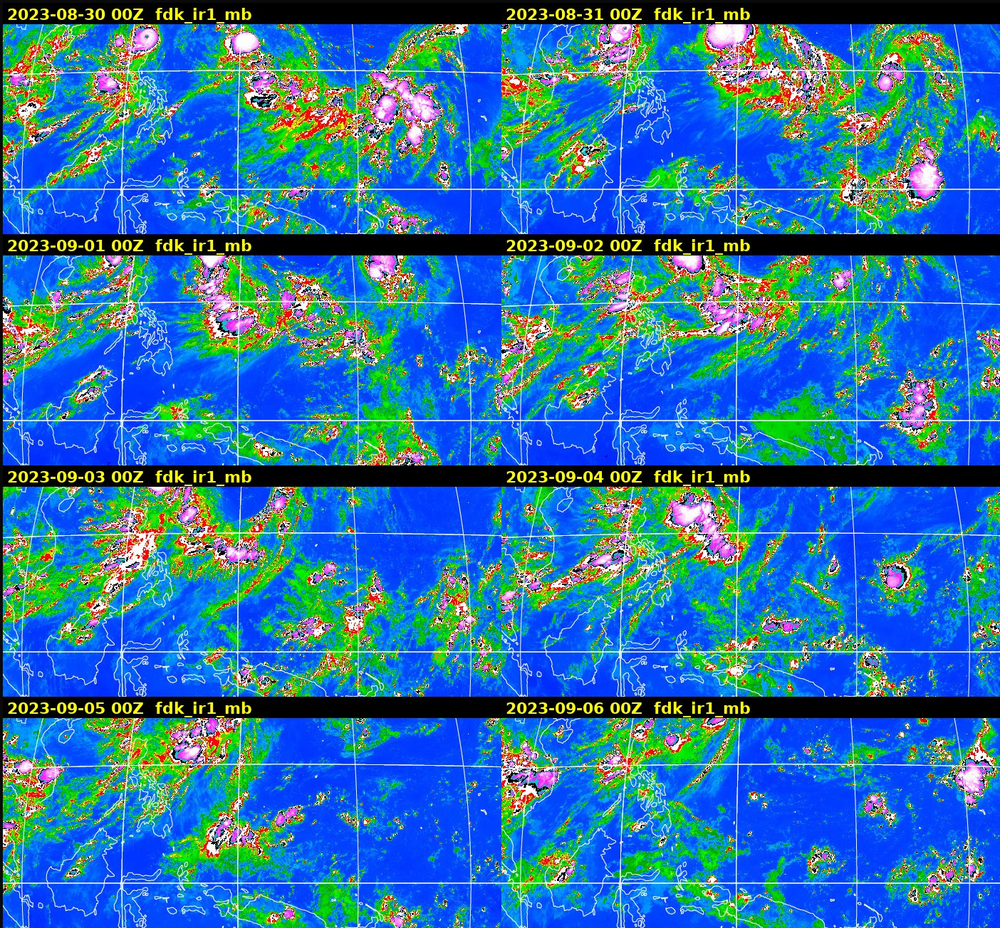
Fig. C1: Himawari IR montage, 30 Aug – 6 Sep 2023.
Appendix D: 24-h versus 6-h operator panels#
Full snapshot panels for the 6-h experiment of Section 3.6, for comparison with the 24-h headline panels (Fig. 3).
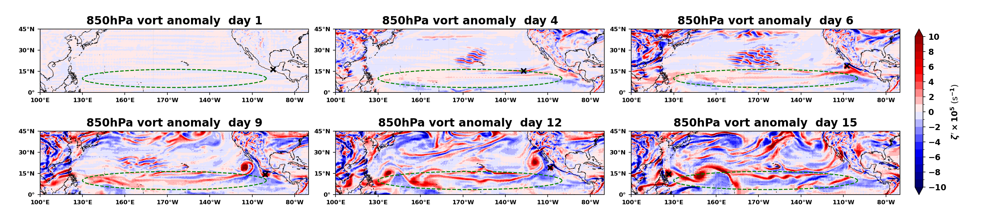
Fig. D1: \(\zeta'_{850}\) evolution with the 6-h operator (sustained forcing, scaled to +0.625 K per step — the controlled counterpart of the 24-h run). Note the land-anchored high-frequency clutter discussed in Section 3.6.
Fig. D2: Companion 24-h run from the same pipeline configuration.